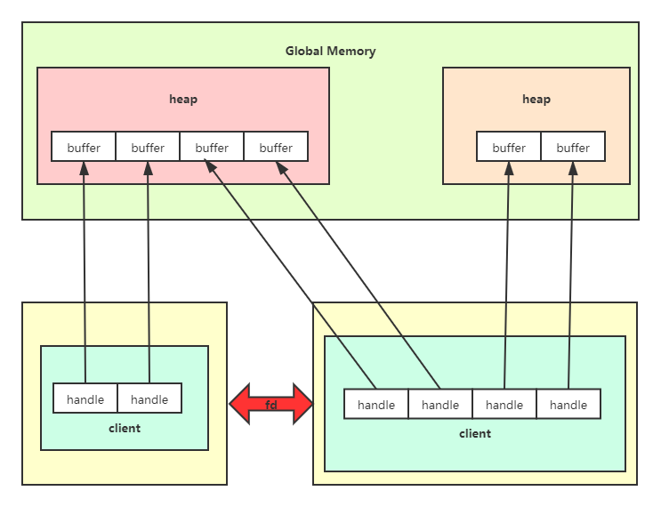

ION Memory Control
ION子系统目的主要是通过在硬件设备和用户空间之间分配和共享内存，实现设备之间零拷贝共享内存。
- 零拷贝：CPU不执行拷贝数据从一个存储区域到另一个存储区域
ION是Google在Android 4.0 ICS中引入，用于改善对于当前不同平台的android设备，使用各种不同内存管理接口来管理相应内存的状况，ION将内存管理机制抽象成一系列通用的接口，可集中分配各类不同内存(ion_heap_type区分)。
ION的主要功能：
- 内存管理：提供通用（平台无关）的内存管理接口，通过heap管理各种类型的内存。
- 共享内存：可提供驱动之间、用户进程之间、内核空间和用户空间之间的共享内存。
ION通过heap类型来代表不同的内存，不同的内存有不同的分配方式。
// in ./src/system/core/libion/kernel-headers/linux/ion.h
enum ion_heap_type {
ION_HEAP_TYPE_SYSTEM,
ION_HEAP_TYPE_SYSTEM_CONTIG,
ION_HEAP_TYPE_CARVEOUT,
ION_HEAP_TYPE_CHUNK,
ION_HEAP_TYPE_DMA,
ION_HEAP_TYPE_CUSTOM,
ION_NUM_HEAPS = 16,
};
每个heap中可分配若干个buffer，每个client(ion_open()返回的fd)通过handle管理对应的buffer。每个buffer只能有一个handle对应，每个用户进程只能有一个client，每个client可能有多个handle(申请多块内存空间)。两个client通过文件描述符fd，通过映射方式，将相应内存映射，实现共享内存。

handle通过ion_alloc_fd()赋值，client通过handle来获取分配的ion内存的地址，目前来说并没有碰到过使用ION共享内存的情况，可能因为效率太低？有因为要使用C2D而去申请ion buffer的情况，除了因为C2D要求使用ion，还有为了减少I/O操作加速对图片读写速度的考量，因为通过ION_IOCRL_XXX申请到的空间都位于高速缓存中，CPU可以直接读取到，并且在用户进程中为了方便使用，通常会使用mmap()将ion buffer地址映射到用户空间。
// open /dev/ion
static int ion_fd_get(void)
{
static int fd = -1;
if (fd == -1) {
fd = ion_open();
}
return fd;
}
/*
* @brief alloc ion buffer
* @param ion_fd ion_user_handle_t
* @param size ion buffer size
* @param addr user_space addr
*/
static int alloc_ion_buffer(int *ion_fd, int size, void **addr)
{
int ret;
if (!ion_fd || !addr || size < 0) {
printf("%s: Invalid argument!\n", __FUNCTION__);
return -1;
}
ret = ion_alloc_fd(ion_fd_get(), size, 4096, 1 << 25, 1, ion_fd);
if (ret < 0) {
printf("%s: ion allocate failed!\n", __FUNCTION__);
return -1;
}
*addr = mmap(NULL, size, PROT_READ | PROT_WRITE, MAP_SHARED, *ion_fd, 0);
if (*addr == MAP_FAILED) {
printf("%s: mmap failed!\n", __FUNCTION__);
return -1;
}
return 0;
}
用户空间API
用户空间API通过ioctl直接与驱动交互。
// in .//src/system/core/libion/include/ion/ion.h
int ion_open();
int ion_close(int fd);
int ion_alloc(int fd, size_t len, size_t align, unsigned int heap_mask,
unsigned int flags, ion_user_handle_t *handle);
int ion_alloc_fd(int fd, size_t len, size_t align, unsigned int heap_mask,
unsigned int flags, int *handle_fd);
int ion_sync_fd(int fd, int handle_fd);
int ion_free(int fd, ion_user_handle_t handle);
int ion_map(int fd, ion_user_handle_t handle, size_t length, int prot,
int flags, off_t offset, unsigned char **ptr, int *map_fd);
int ion_share(int fd, ion_user_handle_t handle, int *share_fd);
int ion_import(int fd, int share_fd, ion_user_handle_t *handle);
ioctl()
用户空间API对应的ioctl()操作
// in ./src/system/core/libion/kernel-headers/linux/ion.h
#define ION_IOC_ALLOC _IOWR(ION_IOC_MAGIC, 0, struct ion_allocation_data)
#define ION_IOC_FREE _IOWR(ION_IOC_MAGIC, 1, struct ion_handle_data)
#define ION_IOC_MAP _IOWR(ION_IOC_MAGIC, 2, struct ion_fd_data)
#define ION_IOC_SHARE _IOWR(ION_IOC_MAGIC, 4, struct ion_fd_data)
#define ION_IOC_IMPORT _IOWR(ION_IOC_MAGIC, 5, struct ion_fd_data)
#define ION_IOC_SYNC _IOWR(ION_IOC_MAGIC, 7, struct ion_fd_data)
#define ION_IOC_CUSTOM _IOWR(ION_IOC_MAGIC, 6, struct ion_custom_data)
具体的实现在ion-ioctl.c中。
ion_alloc_fd()
// in ./src/system/core/libion/ion.c
int ion_alloc_fd(int fd, size_t len, size_t align, unsigned int heap_mask, unsigned int flags, int* handle_fd) {
ion_user_handle_t handle;
int ret;
if (!ion_is_legacy(fd)) return -EINVAL;
ret = ion_alloc(fd, len, align, heap_mask, flags, &handle);
if (ret < 0) return ret;
ret = ion_share(fd, handle, handle_fd);
ion_free(fd, handle);
return ret;
}
ion_alloc_fd()所有的参数实际是调用ion_alloc()，填充ion_allocation_data结构体，并调用对应的ioctl（ION_IOC_ALLOC）操作，并返回一个handle给handle_fd。
// in ./src/system/core/libion/kernel-headers/linux/ion.h
struct ion_allocation_data {
size_t len;
size_t align;
unsigned int heap_id_mask;
unsigned int flags;
ion_user_handle_t handle;
};
len：分配的大小。
align：对齐标志，通常为页对齐（4096）
heap_mask：待分配所使用的所有heaps的掩码(用于区分heap类型，实际是1 << ion_heap_type)
flags：传给heap的标志（如：ION_FLAG_CACHED），ion系统使用低16位，高16位用于各自heap实现使用。
handle：ion buffer的句柄
原以为handle会作为ion_alloc_fd()的返回，但是查看ion_share()的源码，在ion_share()中会填充ion_fd_data结构体——进程共享内存所需的元数据，并且最终返回的是用于共享内存的文件描述符。
// in ./src/system/core/libion/kernel-headers/linux/ion.h
/**
* struct ion_fd_data - metadata passed to/from userspace for a handle/fd pair
* @handle: a handle
* @fd: a file descriptor representing that handle
*
* For ION_IOC_SHARE or ION_IOC_MAP userspace populates the handle field with
* the handle returned from ion alloc, and the kernel returns the file
* descriptor to share or map in the fd field. For ION_IOC_IMPORT, userspace
* provides the file descriptor and the kernel returns the handle.
*/
struct ion_fd_data {
ion_user_handle_t handle;
int fd;
}
后记
关于ION的概念就讲这么多，主要集中在应用上，再往下的内核空间API由于本人水平有限，涉及到更底层偏向于物理硬件的内存申请操作即使看过代码也无法能很好的描述其逻辑，而简单的讲解源码在我看来是没有必要的。
第一次运用ION是在多路视频应用中，使用了FFmpeg来解码视频，由于解码出的图片帧是YUV420 NV12，为了显示还需要进行色彩空间转换，如果使用常规色彩空间转换API(如OpenCV)，那么会耗费大量时间在读写和拷贝操作上，因此使用C2D库(依赖于ION)来完成色彩转换操作。在当时我以为ION是一块特殊设计(具有硬件加速功能)且实际存在的物理内存(类似于主存的边角料，但被保留)，因此我理解的是我的用户进程和该物理硬件之间存在内存共享。但是review代码之后，根据我的粗浅理解，这并不会用到ION内存共享的特性，只是因为ION申请到的buffer已经位于高速缓存中，提高了读写命中率，忙完手上这个AIDemo工程后会开始Camera相关的学习，也正是ION框架的应用所在，希望之后会有更好的理解。